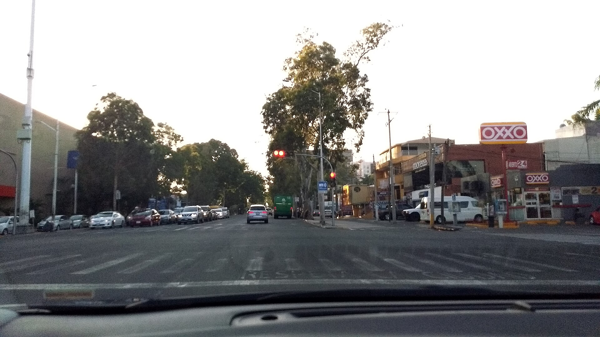
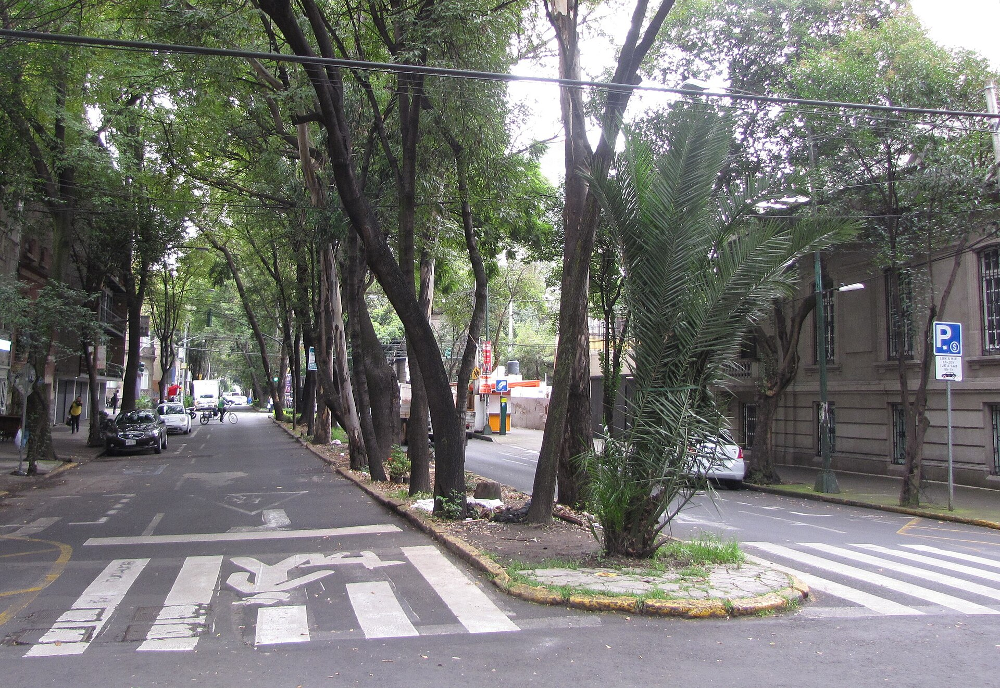
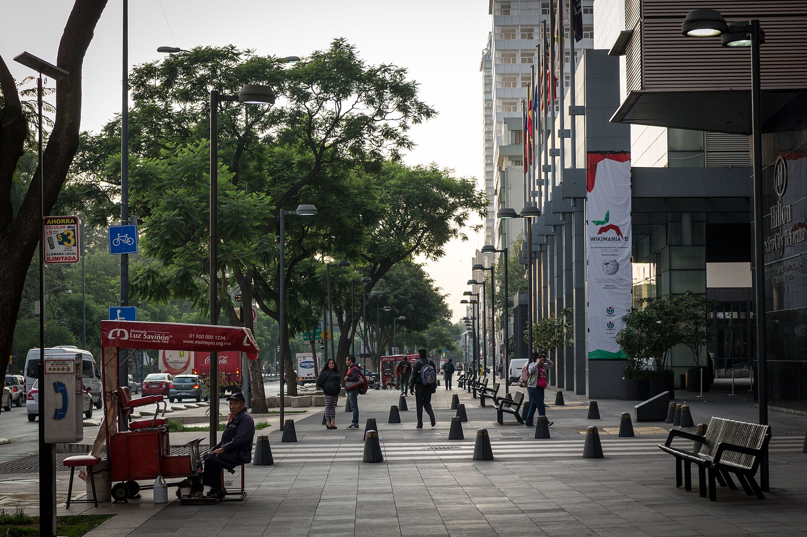
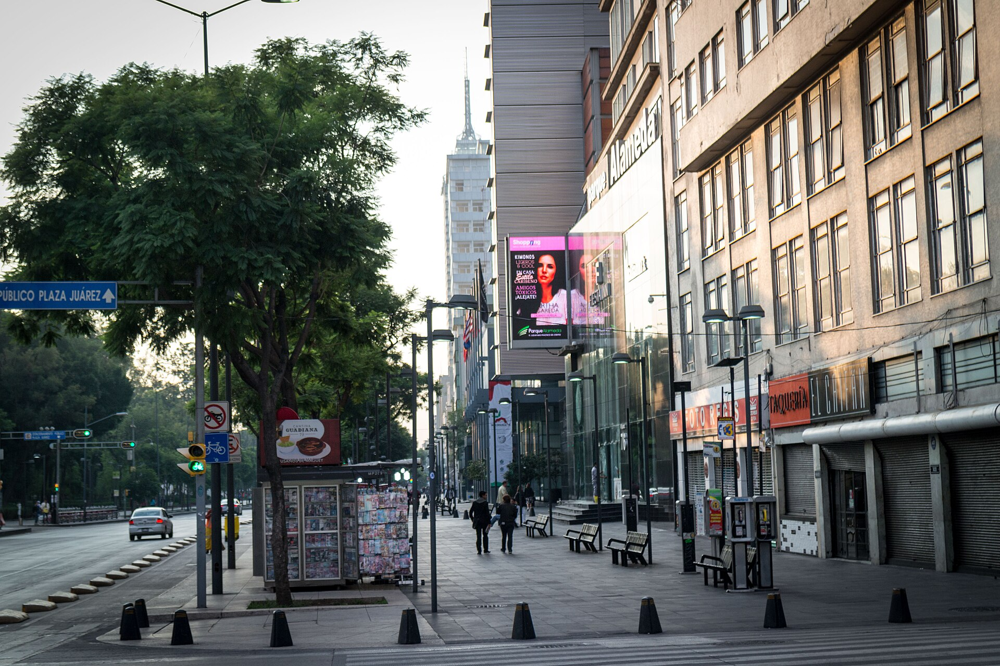

Curso Básico
$1,450
- 5 horas prácticas (1 sem)
- Calles tranquilas de Col. San Felipe de Jesús
- Control de clutch, frenado suave y arranque sin apagones
Enseñanza práctica desde cero y especialistas en personas nerviosas en Av. Villa de Ayala #35, Col. San Felipe de Jesús. Autos estándar y automático equipados con doble pedalera.

Selecciona transmisión y nivel para ver el recorrido de práctica saliendo de Av. Villa de Ayala #35 y cotizar al instante.
$1,450
$2,350
$3,200
Avanzas a tu propio ritmo desde el primer encendido frente a la sucursal en Av. Villa de Ayala hasta incorporarte con seguridad a las avenidas primarias de la Ciudad de México.
Ajuste de asiento, espejos, postura de manos en el volante y sensibilidad en los pedales en calles tranquilas de San Felipe de Jesús con respaldo del doble mando.

Cálculo de dimensiones del vehículo, giros abiertos y cerrados, paso por topes, respeto al peatón y lectura de semáforos sobre Av. Villa de Ayala y calles aledañas.

Cambios de carril con direccionales, espejeo constante, control de distancia e incorporación fluida a ejes viales y avenidas de mayor velocidad en Gustavo A. Madero.

Arranque en subida sin que el auto retroceda, manejo defensivo junto a transporte público y resolución tranquila de imprevistos en hora pico.
Referencias visuales claras para estacionarte en cordón (paralelo), en batería y en cajones estrechos al primer intento, más preparación para tu licencia.
Práctica progresiva en circulación real acompañada en todo momento desde el asiento del instructor.
Unidades equipadas con control auxiliar de freno y clutch del lado del instructor.
Instructores capacitados para acompañar a personas nerviosas o con fobia a conducir.
Elige la transmisión que vas a manejar en casa o combina ambas en tu paquete.
Horarios matutinos y vespertinos entre semana e intensivos en sábado y domingo.
Prácticas en calles y avenidas reales de Gustavo A. Madero, nunca en simuladores estáticos.
Aprende a anticipar maniobras de otros conductores, motociclistas y transporte pesado.
Explicación práctica de señales preventivas, restrictivas y prelación de paso vigente.
Revisión de niveles, presión de neumáticos, cambio de llanta y testigos del tablero.
Inscripción rápida en nuestra oficina de Av. Villa de Ayala #35 o vía WhatsApp.
Sucursal San Felipe de Jesús: Av. Villa de Ayala #35 esq. Calle Talpa, Col. San Felipe de Jesús, Alcaldía Gustavo A. Madero, C.P. 07510, CDMX.
Llamar · 55 8540 6653